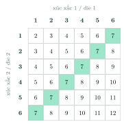

Events and Classical ProbabilityBiến cố và định nghĩa cổ điển của xác suất
Grade 10 · Topic: Classical ProbabilityLớp 10 · Chủ đề: Xác suất theo định nghĩa cổ điển
1Lesson IntroductionGiới thiệu bài học
Learning goalsMục tiêu bài học
By the end of this lesson you can:
Sau bài học này, em có thể:
recognise random experiments, sample spaces and events;
nhận biết phép thử ngẫu nhiên, không gian mẫu, biến cố (phép thử), biến cố đối;
compute probabilities with the classical definition;
tính xác suất bằng định nghĩa cổ điển của xác suất;
count favourable outcomes with tables, trees and combinations;
đếm số kết quả thuận lợi bằng bảng, sơ đồ cây, tổ hợp;
use complements and interpret lotteries and games.
dùng biến cố đối; giải thích cơ hội trong xổ số, trò chơi.
2Mathematical VocabularyTừ vựng Toán học
random experiment – an action whose result cannot be predicted, although all possible results are known.
phép thử ngẫu nhiên – hoạt động mà ta không đoán trước được kết quả, dù đã biết tập hợp các kết quả có thể xảy ra.
sample space – the set of all possible outcomes of an experiment.
không gian mẫu – tập hợp tất cả các kết quả có thể xảy ra của phép thử.
event – a subset of the sample space.
biến cố (phép thử) – một tập con của không gian mẫu.
complementary event – the event \(\overline A=\Omega\setminus A\): "\(A\) does not occur".
biến cố đối – biến cố \(\overline A=\Omega\setminus A\): "\(A\) không xảy ra".
classical probability – \(P(A)=\dfrac{n(A)}{n(\Omega)}\) when all outcomes are equally likely.
định nghĩa cổ điển của xác suất – \(P(A)=\dfrac{n(A)}{n(\Omega)}\) khi các kết quả đồng khả năng.
3Useful English PhrasesCụm từ tiếng Anh thường gặp
The sample space has thirty-six equally likely outcomes.
Không gian mẫu có 36 kết quả đồng khả năng.
There are six favourable outcomes.
Có 6 kết quả thuận lợi.
The probability of the complement is one minus the probability.
Xác suất của biến cố đối bằng 1 trừ xác suất của biến cố.
The chance of winning is very small.
Cơ hội trúng thưởng rất nhỏ.
List all the outcomes.
Liệt kê tất cả các kết quả.
4Prerequisite ReviewÔn tập kiến thức nền
From Bài 23–24: rules of sum and product, \(C_n^k\). From Bài 2: subsets, complement \(\Omega\setminus A\).
Từ Bài 23–24: quy tắc cộng, quy tắc nhân, \(C_n^k\). Từ Bài 2: tập con, phần bù \(\Omega\setminus A\).
5TheoryLý thuyết
5.1 Experiments, sample spaces, eventsPhép thử, không gian mẫu, biến cố
DefinitionsĐịnh nghĩa
A random experiment has outcomes we cannot predict; the set of all outcomes is the sample space \(\Omega\).
Phép thử ngẫu nhiên có kết quả không đoán trước được; tập hợp mọi kết quả là không gian mẫu \(\Omega\).
An event is a subset \(A\subset\Omega\); outcomes in \(A\) are favourable to \(A\). \(\Omega\) is the sure event, \(\varnothing\) the impossible event.
Biến cố là một tập con \(A\subset\Omega\); các kết quả thuộc \(A\) là kết quả thuận lợi cho \(A\). \(\Omega\) là biến cố chắc chắn, \(\varnothing\) là biến cố không thể.
The complementary event \(\overline A=\Omega\setminus A\) occurs exactly when \(A\) does not.
Biến cố đối \(\overline A=\Omega\setminus A\) xảy ra khi và chỉ khi \(A\) không xảy ra.
5.2 Classical definition of probabilityĐịnh nghĩa cổ điển của xác suất
Formula and propertiesCông thức và tính chất
If all outcomes of \(\Omega\) are equally likely: \(P(A)=\dfrac{n(A)}{n(\Omega)}\).
Nếu các kết quả của \(\Omega\) đồng khả năng: \(P(A)=\dfrac{n(A)}{n(\Omega)}\).
\(0\le P(A)\le1\), \(P(\Omega)=1\), \(P(\varnothing)=0\), \(P(\overline A)=1-P(A)\).
\(0\le P(A)\le1\), \(P(\Omega)=1\), \(P(\varnothing)=0\), \(P(\overline A)=1-P(A)\).
Principle of small probability: an event with a very small probability is practically considered not to happen in a single trial.
Nguyên lí xác suất bé: biến cố có xác suất rất nhỏ thì trong thực tế coi như không xảy ra trong một lần thử.

Watch out!Lưu ý
The formula needs equally likely outcomes: the sums 2, 3, …, 12 are not equally likely, so do not write \(P(\text{sum}=7)=\frac1{11}\).
Công thức chỉ dùng khi các kết quả đồng khả năng: các tổng 2, 3, …, 12 không đồng khả năng nên không được viết \(P(\text{tổng}=7)=\frac1{11}\).
6Worked ExamplesVí dụ có lời giải
ExampleVí dụ 1BasicCơ bản – Two coinsHai lần gieo đồng xu
A coin is tossed twice. Describe \(\Omega\) and find the probability of at least one head (S = head, N = tail).
Gieo một đồng xu hai lần. Mô tả không gian mẫu và tính xác suất có ít nhất một lần xuất hiện mặt sấp (S: sấp, N: ngửa).
Analysis: List the outcomes.
Phân tích: Liệt kê các kết quả.
\(\Omega=\{SS,SN,NS,NN\}\), \(n(\Omega)=4\).
\(\Omega=\{SS,SN,NS,NN\}\), \(n(\Omega)=4\).
\(A=\{SS,SN,NS\}\), or \(\overline A=\{NN\}\): \(P(A)=1-\frac14\).
\(A=\{SS,SN,NS\}\), hoặc \(\overline A=\{NN\}\): \(P(A)=1-\frac14\).
\(P(A)=\dfrac34\).
\(P(A)=\dfrac34\).
ExampleVí dụ 2BasicCơ bản – Two diceHai con xúc xắc
Two dice are rolled. Find \(P(\text{sum}=7)\) and \(P(\text{sum}\ge10)\).
Gieo hai con xúc xắc. Tính \(P(\text{tổng}=7)\) và \(P(\text{tổng}\ge10)\).
Analysis: \(n(\Omega)=6\cdot6=36\); use the table.
Phân tích: \(n(\Omega)=6\cdot6=36\); dùng bảng.
Sum 7: \((1,6),(2,5),\dots,(6,1)\): 6 outcomes.
Tổng 7: \((1,6),(2,5),\dots,(6,1)\): 6 kết quả.
Sum \(\ge10\): \((4,6),(5,5),(6,4),(5,6),(6,5),(6,6)\): 6 outcomes.
Tổng \(\ge10\): \((4,6),(5,5),(6,4),(5,6),(6,5),(6,6)\): 6 kết quả.
Both equal \(\dfrac16\).
Cả hai bằng \(\dfrac16\).
ExampleVí dụ 3IntermediateTrung bình – Drawing ballsLấy cầu
A box has 5 red and 4 blue balls. Three balls are drawn at random. Find the probability of exactly 2 red balls.
Một hộp có 5 quả cầu đỏ và 4 quả cầu xanh. Lấy ngẫu nhiên 3 quả. Tính xác suất lấy được đúng 2 quả đỏ.
Analysis: \(n(\Omega)=C_9^3\).
Phân tích: \(n(\Omega)=C_9^3\).
\(n(\Omega)=84\); favourable: \(C_5^2\cdot C_4^1=10\cdot4=40\).
\(n(\Omega)=84\); thuận lợi: \(C_5^2\cdot C_4^1=10\cdot4=40\).
\(\dfrac{40}{84}=\dfrac{10}{21}\).
\(\dfrac{40}{84}=\dfrac{10}{21}\).
ExampleVí dụ 4IntermediateTrung bình – Using the complementDùng biến cố đối
A group has 8 boys and 12 girls. Four students are chosen at random. Find the probability that at least one boy is chosen.
Một nhóm có 8 nam và 12 nữ. Chọn ngẫu nhiên 4 bạn. Tính xác suất chọn được ít nhất một nam.
Analysis: Complement: all four are girls.
Phân tích: Biến cố đối: cả bốn bạn đều là nữ.
\(P(\overline A)=\dfrac{C_{12}^4}{C_{20}^4}=\dfrac{495}{4845}=\dfrac{33}{323}\).
\(P(\overline A)=\dfrac{C_{12}^4}{C_{20}^4}=\dfrac{495}{4845}=\dfrac{33}{323}\).
\(P(A)=1-\dfrac{33}{323}=\dfrac{290}{323}\approx0{,}90\).
\(P(A)=1-\dfrac{33}{323}=\dfrac{290}{323}\approx0{,}90\).
ExampleVí dụ 5AdvancedNâng cao – Mega 6/45: three correct numbersMega 6/45: trúng ba số
A Mega 6/45 ticket has 6 numbers; 6 winning numbers are drawn from 1–45. What is the probability that a ticket matches exactly 3 winning numbers?
Mỗi vé Mega 6/45 có 6 số; xổ ra 6 số trúng thưởng trong 45 số. Tính xác suất một vé trùng đúng 3 số trúng thưởng.
Analysis: Choose which 3 of the 6 winning numbers are on the ticket, and 3 of the 39 others.
Phân tích: Chọn 3 trong 6 số trúng có trên vé và 3 trong 39 số còn lại.
\(n(\Omega)=C_{45}^6=8\,145\,060\); favourable \(C_6^3\cdot C_{39}^3=20\cdot9139=182\,780\).
\(n(\Omega)=C_{45}^6=8\,145\,060\); thuận lợi \(C_6^3\cdot C_{39}^3=20\cdot9139=182\,780\).
\(P\approx0{,}0224\): about 1 ticket in 45.
\(P\approx0{,}0224\): khoảng 1 vé trong 45 vé.
\(P=\dfrac{9139}{407253}\approx2{,}2\%\).
\(P=\dfrac{9139}{407253}\approx2{,}2\%\).
7PracticeBài tập luyện tập
A. Multiple ChoiceA. Trắc nghiệm nhiều lựa chọn
Two dice are rolled. \(P(\text{sum}=8)=\)…
Gieo hai con xúc xắc. \(P(\text{tổng}=8)\) bằng…
Answer: a. 5 favourable outcomes.
Đáp án a. Có 5 kết quả thuận lợi trên 36.
3 coins are tossed. \(P(\text{exactly 2 heads})=\)…
Gieo 3 đồng xu. Xác suất có đúng 2 mặt sấp là…
Answer: c. \(C_{3}^{2}/2^{3}\).
Đáp án c. \(\dfrac{C_{3}^{2}}{2^{3}}\).
A box has 4 white and 5 black balls; two are drawn. \(P(\text{both black})=\)…
Hộp có 4 cầu trắng, 5 cầu đen; lấy ngẫu nhiên 2 quả. Xác suất cả hai đều đen là…
Answer: c. \(\dfrac{C_{5}^2}{C_{9}^2}\).
Đáp án c. \(\dfrac{C_{5}^2}{C_{9}^2}\).
B. True or FalseB. Đúng hoặc sai
A box has 3 red and 7 green balls. One is drawn. \(P(\text{not red})=\dfrac{7}{10}\).
Hộp có 3 cầu đỏ và 7 cầu xanh. Lấy ngẫu nhiên 1 quả. Xác suất không lấy được quả đỏ là \(\dfrac{7}{10}\).
\(1-\dfrac{3}{10}=\dfrac{7}{10}\).
\(P(\overline A)=1-\dfrac{3}{10}=\dfrac{7}{10}\).
Two dice: P(both show the same number) = 1/6.
Gieo hai con xúc xắc: xác suất hai mặt có cùng số chấm bằng \(\frac16\).
Use the 36-cell table.
Dùng bảng 36 ô.
C. Short AnswerC. Trả lời ngắn
Two students are chosen from 10 for a duty. How many elements does the sample space have?
Chọn 2 trong 10 học sinh đi trực. Không gian mẫu có bao nhiêu phần tử?
Enter a number.
Nhập một số.
Rule of product / combinations.
Dùng quy tắc nhân hoặc tổ hợp.
In a 5/35 lottery, how many tickets match exactly 4 of the 5 winning numbers?
Trong xổ số 5/35, có bao nhiêu vé trùng đúng 4 trong 5 số trúng thưởng?
Enter a number.
Nhập một số.
Choose the matching numbers, then the others.
Chọn các số trùng, rồi chọn các số còn lại.
A. Multiple ChoiceA. Trắc nghiệm nhiều lựa chọn
Two dice are rolled. \(P(\text{sum}=5)=\)…
Gieo hai con xúc xắc. \(P(\text{tổng}=5)\) bằng…
Answer: d. 4 favourable outcomes.
Đáp án d. Có 4 kết quả thuận lợi trên 36.
4 coins are tossed. \(P(\text{exactly 3 heads})=\)…
Gieo 4 đồng xu. Xác suất có đúng 3 mặt sấp là…
Answer: c. \(C_{4}^{3}/2^{4}\).
Đáp án c. \(\dfrac{C_{4}^{3}}{2^{4}}\).
A box has 6 white and 3 black balls; two are drawn. \(P(\text{both black})=\)…
Hộp có 6 cầu trắng, 3 cầu đen; lấy ngẫu nhiên 2 quả. Xác suất cả hai đều đen là…
Answer: c. \(\dfrac{C_{3}^2}{C_{9}^2}\).
Đáp án c. \(\dfrac{C_{3}^2}{C_{9}^2}\).
B. True or FalseB. Đúng hoặc sai
A box has 5 red and 3 green balls. One is drawn. \(P(\text{not red})=\dfrac{5}{8}\).
Hộp có 5 cầu đỏ và 3 cầu xanh. Lấy ngẫu nhiên 1 quả. Xác suất không lấy được quả đỏ là \(\dfrac{5}{8}\).
\(1-\dfrac{5}{8}=\dfrac{3}{8}\).
\(P(\overline A)=1-\dfrac{5}{8}=\dfrac{3}{8}\).
Two dice: P(the sum is odd) = 1/3.
Gieo hai con xúc xắc: xác suất tổng số chấm là số lẻ bằng \(\frac13\).
Use the 36-cell table.
Dùng bảng 36 ô.
C. Short AnswerC. Trả lời ngắn
Three coins are tossed and a die is rolled. How many elements does the sample space have?
Gieo ba đồng xu và một con xúc xắc. Không gian mẫu có bao nhiêu phần tử?
Enter a number.
Nhập một số.
Rule of product / combinations.
Dùng quy tắc nhân hoặc tổ hợp.
In Mega 6/45, how many tickets match exactly 5 of the 6 winning numbers?
Trong Mega 6/45, có bao nhiêu vé trùng đúng 5 trong 6 số trúng thưởng?
Enter a number.
Nhập một số.
Choose the matching numbers, then the others.
Chọn các số trùng, rồi chọn các số còn lại.
A. Multiple ChoiceA. Trắc nghiệm nhiều lựa chọn
Two dice are rolled. \(P(\text{sum}=10)=\)…
Gieo hai con xúc xắc. \(P(\text{tổng}=10)\) bằng…
Answer: a. 3 favourable outcomes.
Đáp án a. Có 3 kết quả thuận lợi trên 36.
4 coins are tossed. \(P(\text{exactly 2 heads})=\)…
Gieo 4 đồng xu. Xác suất có đúng 2 mặt sấp là…
Answer: c. \(C_{4}^{2}/2^{4}\).
Đáp án c. \(\dfrac{C_{4}^{2}}{2^{4}}\).
A box has 3 white and 7 black balls; two are drawn. \(P(\text{both black})=\)…
Hộp có 3 cầu trắng, 7 cầu đen; lấy ngẫu nhiên 2 quả. Xác suất cả hai đều đen là…
Answer: c. \(\dfrac{C_{7}^2}{C_{10}^2}\).
Đáp án c. \(\dfrac{C_{7}^2}{C_{10}^2}\).
B. True or FalseB. Đúng hoặc sai
A box has 2 red and 6 green balls. One is drawn. \(P(\text{not red})=\dfrac{3}{4}\).
Hộp có 2 cầu đỏ và 6 cầu xanh. Lấy ngẫu nhiên 1 quả. Xác suất không lấy được quả đỏ là \(\dfrac{3}{4}\).
\(1-\dfrac{2}{8}=\dfrac{3}{4}\).
\(P(\overline A)=1-\dfrac{2}{8}=\dfrac{3}{4}\).
Two dice: P(at least one six) = 11/36.
Gieo hai con xúc xắc: xác suất có ít nhất một mặt 6 chấm bằng \(\frac{11}{36}\).
Use the 36-cell table.
Dùng bảng 36 ô.
C. Short AnswerC. Trả lời ngắn
Three dice are rolled. How many elements does the sample space have?
Gieo ba con xúc xắc. Không gian mẫu có bao nhiêu phần tử?
Enter a number.
Nhập một số.
Rule of product / combinations.
Dùng quy tắc nhân hoặc tổ hợp.
In a 5/35 lottery, how many tickets match exactly 3 of the 5 winning numbers?
Trong xổ số 5/35, có bao nhiêu vé trùng đúng 3 trong 5 số trúng thưởng?
Enter a number.
Nhập một số.
Choose the matching numbers, then the others.
Chọn các số trùng, rồi chọn các số còn lại.
D. Self-practice: Multiple ChoiceD. Tự luyện: trắc nghiệm
Two fair dice are rolled. The probability that the sum is 6 is…
Gieo hai con xúc xắc cân đối. Xác suất để tổng số chấm bằng 6 là…
Answer: b. \(n(\Omega)=36\); favourable outcomes: 5.
Đáp án b. \(n(\Omega)=36\); các kết quả thuận lợi: (1,5), (2,4), (3,3), (4,2), (5,1) – có 5 kết quả.
3 fair coins are tossed. The probability of exactly 1 heads is…
Gieo 3 đồng xu cân đối. Xác suất có đúng 1 mặt sấp là…
Answer: b. \(n(\Omega)=2^3\); choose the positions of the heads: \(C_{3}^{1}\).
Đáp án b. \(n(\Omega)=2^3=8\); số kết quả thuận lợi \(C_{3}^{1}=3\).
A box has 7 red, 9 blue and 1 green balls. One ball is drawn at random. P(the ball is not red) =…
Một hộp có 7 quả cầu đỏ, 9 quả xanh dương và 1 quả xanh lá. Lấy ngẫu nhiên một quả. Xác suất lấy được quả không phải màu đỏ là…
Answer: c. \(\dfrac{9+1}{17}\).
Đáp án c. \(n(\Omega)=17\), thuận lợi \(9+1=10\).
A box has 3 white and 6 black balls. Two balls are drawn at random. P(both are white) =…
Một hộp có 3 quả cầu trắng và 6 quả cầu đen. Lấy ngẫu nhiên hai quả. Xác suất cả hai quả đều trắng là…
Answer: c. \(\dfrac{C_{3}^2}{C_{9}^2}\).
Đáp án c. \(n(\Omega)=C_{9}^2=36\); thuận lợi \(C_{3}^2=3\).
From 5 boys and 4 girls, 3 students are chosen at random. P(at least one girl) =…
Chọn ngẫu nhiên 3 học sinh từ 5 nam và 4 nữ. Xác suất chọn được ít nhất một nữ là…
Answer: c. Complement: all boys, \(\dfrac{C_{5}^{3}}{C_{9}^{3}}\).
Đáp án c. Biến cố đối "toàn nam": \(\dfrac{C_{5}^{3}}{C_{9}^{3}}\); lấy 1 trừ đi.
A coin is tossed twice and a die is rolled once. The number of elements of the sample space is…
Gieo một đồng xu hai lần và một con xúc xắc một lần. Số phần tử của không gian mẫu là…
Answer: b. Rule of product.
Đáp án b. Quy tắc nhân: \(n(\Omega)=24\).
A number is chosen at random from \(1,2,\dots,20\). P(it is divisible by 6) =…
Chọn ngẫu nhiên một số trong các số \(1,2,\dots,20\). Xác suất số đó chia hết cho 6 là…
Answer: a. There are \(\lfloor 20/6\rfloor=3\) multiples.
Đáp án a. Có 3 bội của 6 trong \([1;20]\).
Choose 3 students at random from 5 boys and 6 girls. P(exactly 2 boys and 1 girl) =…
Chọn ngẫu nhiên 3 học sinh từ 5 nam và 6 nữ. Xác suất chọn được đúng 2 nam và 1 nữ là…
Answer: d. \(\dfrac{C_{5}^2\cdot C_{6}^1}{C_{11}^3}\).
Đáp án d. \(\dfrac{C_{5}^2\cdot6}{C_{11}^3}=\dfrac{60}{165}\).
D. Self-practice: Multiple ChoiceD. Tự luyện: trắc nghiệm
Two fair dice are rolled. The probability that the sum is 9 is…
Gieo hai con xúc xắc cân đối. Xác suất để tổng số chấm bằng 9 là…
Answer: b. \(n(\Omega)=36\); favourable outcomes: 4.
Đáp án b. \(n(\Omega)=36\); các kết quả thuận lợi: (3,6), (4,5), (5,4), (6,3) – có 4 kết quả.
3 fair coins are tossed. The probability of exactly 2 heads is…
Gieo 3 đồng xu cân đối. Xác suất có đúng 2 mặt sấp là…
Answer: d. \(n(\Omega)=2^3\); choose the positions of the heads: \(C_{3}^{2}\).
Đáp án d. \(n(\Omega)=2^3=8\); số kết quả thuận lợi \(C_{3}^{2}=3\).
A box has 9 red, 2 blue and 5 green balls. One ball is drawn at random. P(the ball is not red) =…
Một hộp có 9 quả cầu đỏ, 2 quả xanh dương và 5 quả xanh lá. Lấy ngẫu nhiên một quả. Xác suất lấy được quả không phải màu đỏ là…
Answer: c. \(\dfrac{2+5}{16}\).
Đáp án c. \(n(\Omega)=16\), thuận lợi \(2+5=7\).
A box has 6 white and 8 black balls. Two balls are drawn at random. P(both are white) =…
Một hộp có 6 quả cầu trắng và 8 quả cầu đen. Lấy ngẫu nhiên hai quả. Xác suất cả hai quả đều trắng là…
Answer: a. \(\dfrac{C_{6}^2}{C_{14}^2}\).
Đáp án a. \(n(\Omega)=C_{14}^2=91\); thuận lợi \(C_{6}^2=15\).
From 6 boys and 4 girls, 3 students are chosen at random. P(at least one girl) =…
Chọn ngẫu nhiên 3 học sinh từ 6 nam và 4 nữ. Xác suất chọn được ít nhất một nữ là…
Answer: b. Complement: all boys, \(\dfrac{C_{6}^{3}}{C_{10}^{3}}\).
Đáp án b. Biến cố đối "toàn nam": \(\dfrac{C_{6}^{3}}{C_{10}^{3}}\); lấy 1 trừ đi.
Two dice are rolled. The number of elements of the sample space is…
Gieo hai con xúc xắc. Số phần tử của không gian mẫu là…
Answer: a. Rule of product.
Đáp án a. Quy tắc nhân: \(n(\Omega)=36\).
A number is chosen at random from \(1,2,\dots,100\). P(it is divisible by 6) =…
Chọn ngẫu nhiên một số trong các số \(1,2,\dots,100\). Xác suất số đó chia hết cho 6 là…
Answer: d. There are \(\lfloor 100/6\rfloor=16\) multiples.
Đáp án d. Có 16 bội của 6 trong \([1;100]\).
Choose 3 students at random from 4 boys and 6 girls. P(exactly 2 boys and 1 girl) =…
Chọn ngẫu nhiên 3 học sinh từ 4 nam và 6 nữ. Xác suất chọn được đúng 2 nam và 1 nữ là…
Answer: c. \(\dfrac{C_{4}^2\cdot C_{6}^1}{C_{10}^3}\).
Đáp án c. \(\dfrac{C_{4}^2\cdot6}{C_{10}^3}=\dfrac{36}{120}\).
D. Self-practice: Multiple ChoiceD. Tự luyện: trắc nghiệm
Two fair dice are rolled. The probability that the sum is 3 is…
Gieo hai con xúc xắc cân đối. Xác suất để tổng số chấm bằng 3 là…
Answer: b. \(n(\Omega)=36\); favourable outcomes: 2.
Đáp án b. \(n(\Omega)=36\); các kết quả thuận lợi: (1,2), (2,1) – có 2 kết quả.
4 fair coins are tossed. The probability of exactly 1 heads is…
Gieo 4 đồng xu cân đối. Xác suất có đúng 1 mặt sấp là…
Answer: b. \(n(\Omega)=2^4\); choose the positions of the heads: \(C_{4}^{1}\).
Đáp án b. \(n(\Omega)=2^4=16\); số kết quả thuận lợi \(C_{4}^{1}=4\).
A box has 6 red, 2 blue and 5 green balls. One ball is drawn at random. P(the ball is not red) =…
Một hộp có 6 quả cầu đỏ, 2 quả xanh dương và 5 quả xanh lá. Lấy ngẫu nhiên một quả. Xác suất lấy được quả không phải màu đỏ là…
Answer: d. \(\dfrac{2+5}{13}\).
Đáp án d. \(n(\Omega)=13\), thuận lợi \(2+5=7\).
A box has 4 white and 6 black balls. Two balls are drawn at random. P(both are white) =…
Một hộp có 4 quả cầu trắng và 6 quả cầu đen. Lấy ngẫu nhiên hai quả. Xác suất cả hai quả đều trắng là…
Answer: c. \(\dfrac{C_{4}^2}{C_{10}^2}\).
Đáp án c. \(n(\Omega)=C_{10}^2=45\); thuận lợi \(C_{4}^2=6\).
From 5 boys and 3 girls, 2 students are chosen at random. P(at least one girl) =…
Chọn ngẫu nhiên 2 học sinh từ 5 nam và 3 nữ. Xác suất chọn được ít nhất một nữ là…
Answer: b. Complement: all boys, \(\dfrac{C_{5}^{2}}{C_{8}^{2}}\).
Đáp án b. Biến cố đối "toàn nam": \(\dfrac{C_{5}^{2}}{C_{8}^{2}}\); lấy 1 trừ đi.
Three coins are tossed. The number of elements of the sample space is…
Gieo ba đồng xu. Số phần tử của không gian mẫu là…
Answer: d. Rule of product.
Đáp án d. Quy tắc nhân: \(n(\Omega)=8\).
A number is chosen at random from \(1,2,\dots,60\). P(it is divisible by 6) =…
Chọn ngẫu nhiên một số trong các số \(1,2,\dots,60\). Xác suất số đó chia hết cho 6 là…
Answer: b. There are \(\lfloor 60/6\rfloor=10\) multiples.
Đáp án b. Có 10 bội của 6 trong \([1;60]\).
Choose 3 students at random from 6 boys and 5 girls. P(exactly 2 boys and 1 girl) =…
Chọn ngẫu nhiên 3 học sinh từ 6 nam và 5 nữ. Xác suất chọn được đúng 2 nam và 1 nữ là…
Answer: a. \(\dfrac{C_{6}^2\cdot C_{5}^1}{C_{11}^3}\).
Đáp án a. \(\dfrac{C_{6}^2\cdot5}{C_{11}^3}=\dfrac{75}{165}\).
8Common MistakesLỗi thường gặp
Using outcomes that are not equally likely. Sums of two dice are not equally likely: use ordered pairs.
Dùng các kết quả không đồng khả năng. Các tổng của hai xúc xắc không đồng khả năng: phải dùng cặp có thứ tự.
Counting \((1,6)\) and \((6,1)\) as one outcome. The two dice are different: they are two outcomes.
Coi \((1,6)\) và \((6,1)\) là một kết quả. Hai con xúc xắc khác nhau: đó là hai kết quả.
Mixing order and no order. If \(n(\Omega)\) uses \(C\), the favourable count must use \(C\) too.
Lẫn lộn có thứ tự và không thứ tự. Nếu \(n(\Omega)\) dùng \(C\) thì số kết quả thuận lợi cũng phải dùng \(C\).
Long case-work for "at least". Use \(P(A)=1-P(\overline A)\).
Chia nhiều trường hợp cho "ít nhất". Dùng \(P(A)=1-P(\overline A)\).
9Lesson SummaryTổng kết
\(\Omega\): all outcomes; event \(A\subset\Omega\); \(\overline A=\Omega\setminus A\).
\(\Omega\): mọi kết quả; biến cố \(A\subset\Omega\); \(\overline A=\Omega\setminus A\).
\(P(A)=\dfrac{n(A)}{n(\Omega)}\) (equally likely outcomes).
\(P(A)=\dfrac{n(A)}{n(\Omega)}\) (các kết quả đồng khả năng).
\(0\le P(A)\le1\); \(P(\overline A)=1-P(A)\).
\(0\le P(A)\le1\); \(P(\overline A)=1-P(A)\).
Key words: experiment, sample space, event, complement, probability.
Từ cần nhớ: experiment, sample space, event, complement, probability.